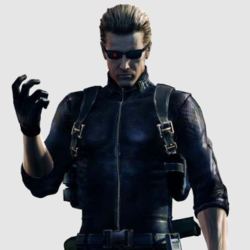
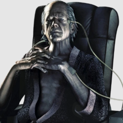
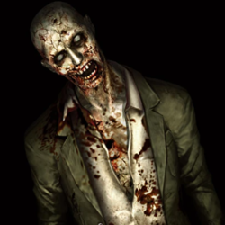
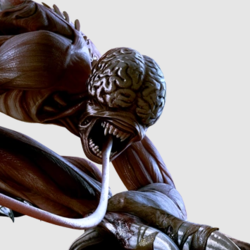
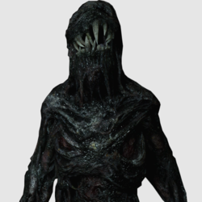
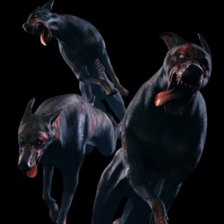
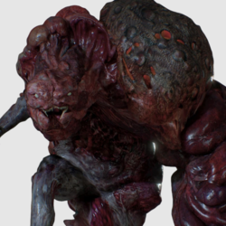
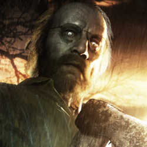

S.T.A.R.S.
Chris Redfield
ProtagonistaAparições: Resident Evil 1, Code: Veronica, RE 5, RE 6, RE 7: Biohazard, RE Village.
Umbrella

Albert Wesker
VilãoAparições: Resident Evil 0, RE 1, Code: Veronica, RE 4, RE 5.
Umbrella

Oswell E. Spencer
VilãoAparições: Resident Evil, RE 0, RE Remake, RE Umbrella Chronicles, RE 5.

Zumbi
MonstroAparições: Resident Evil 0, RE 1, RE 2, RE 3, RE 6.

Licker
MonstroAparições: Resident Evil 2, RE 5.

Mofado
MonstroAparições: Resident Evil Biohazard.

Cerberus
MonstroAparições: Resident Evil, RE 2, RE 3, RE: Code Veronica.

Criatura G
MonstroAparições: Resident Evil 2, RE Outbreak.

Jack Baker
BossAparições: Resident Evil Biohazard.